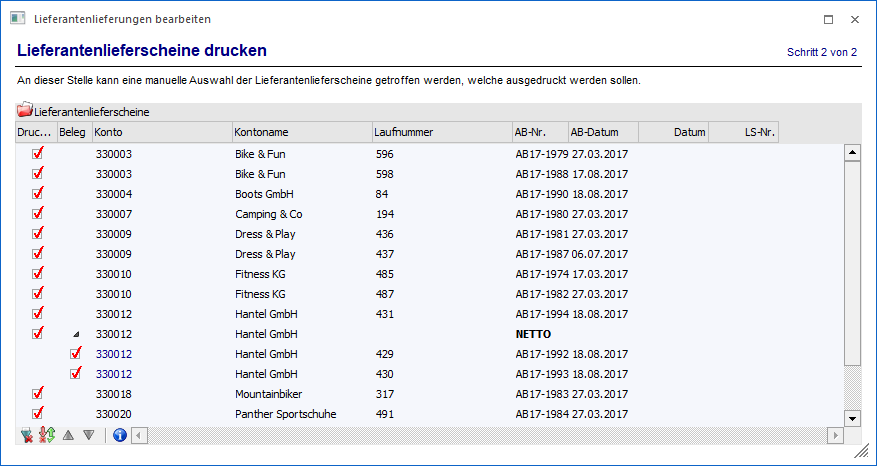
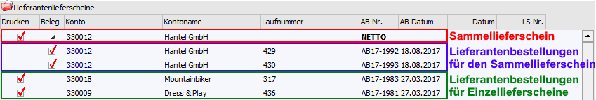
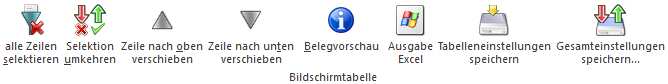

In dem Bereich "Lieferantenlieferscheine drucken" können die Lieferantenlieferschein (Einzel- und / oder Sammellieferscheine) für Lieferantenbestellungen, welche im Bereich "Lieferantenlieferung bearbeiten" vorbereitet wurden, ausgedruckt werden.
Hinweis
Wurde nicht mittels Button "Ok" oder F5 in diesen Bereich gewechselt, sondern mit dem Button "Vor", so werden jene Lieferantenbestellung zum Lieferscheindruck vorgeschlagen, welche bereits zu einem früheren Zeitpunkt im "Lieferantenlieferung bearbeiten" vorbereitet (d.h. gespeichert) wurden.

Innerhalb der Tabelle "Lieferantenlieferscheine" werden die Lieferantenbestellungen angezeigt, welche als Lieferschein gedruckt werden können. Der Druck mit durch Anwahl des Buttons "Ok" bzw. der Taste F5 gestartet.
Hinweis
Handelt es sich um Bestellungen mit verknüpften Verweisartikeln, so wird beim Drucken des Lieferantenlieferscheines die Einkaufsdispositionszeile des bestellten Artikels reduziert. Gleichzeitig wird auch die Umbuchungsanforderungszeile des Artikels mit Bedarf (Verweisartikel) reduziert. Zusätzlich entstehen 2 neue Lagerumbuchungszeilen (die z.B. in der Artikelbedarfsvorschau angezeigt werden); eine bei dem Verweisartikel als Zugang (+) und eine bei dem bestellten Einkaufsartikel als Abgang (-).
In der Tabelle "Lieferantenlieferscheine" stehen folgende Spalten zur Verfügung:
Ø Drucken
Mit Hilfe dieser Option kann definiert werden, welche Lieferantenbestellung als Lieferantenlieferschein gedruckt werden sollen.
Ø Beleg
Handelt es sich bei den Lieferantenbestellungen um Beleg, welche in einen Sammellieferschein zusammengefasst werden sollen, so kann an dieser Stelle definiert werden, ob die Bestellungen in den Sammellieferschein übernommen werden sollen.
In Sammellieferscheinen werden die Lieferantenbestellungen nach Lieferant, Fremdwährung, Brutto/Netto-Option der Preisliste und Summenrabatt gruppiert. D.h. Bestellungen, die sich in diesen Einstellungen unterscheiden, können nicht in einen Sammellieferschein zusammengefasst werden.
Beispiel

Hinweis
Einzellieferscheine können auch nachträglich zu Sammellieferscheinen hinzugefügt werden. Dieses ist per Drag & Drop (Lieferantenbestellung auf Sammellieferscheinzeile fallen lassen) oder durch ausschneiden und einfügen der Zeile (über das Kontextmenü der rechten Maustaste) möglich, wobei vor dem Hinzufügen eine Sicherheitsabfrage erscheint. Voraussetzung hier ist, dass Lieferant, Fremdwährung, Brutto/Netto-Option der Preisliste und Summenrabatt übereinstimmend sind.
Ø Konto / Kontoname / Laufnummer / AB-Nr. / AB-Datum
In diesem Spalten werden der Lieferant mit Name, die Laufnummer der Lieferantenbestellung, die Belegnummer und das Belegdatum angezeigt.
Ø Datum
An dieser Stelle kann das Datum des Lieferscheins hinterlegt werden. Bleibt das Feld leer, so wird das Tagesdatum für den Druck verwendet.
Ø LS-Nr.
In dieser Spalte kann die Belegnummer des Lieferantenlieferscheins angegeben werden. Bleibt das Feld leer, so wird die Belegnummer gemäß Nummernkreis der Belegart ermittelt.
Tabellenbuttons

Ø alle Zeilen selektieren
Mit Hilfe dieses Buttons werden alle Lieferantenbestellungen für den Lieferscheindruck selektiert.
Ø Selektion umkehren
Bei Anwahl des Buttons werden die selektierten Datensätze deselektiert und umgekehrt.
Ø Zeile nach oben verschieben / Zeile nach unten verschieben
Handelt es sich bei der markierten Zeile um eine Lieferantenbestellung, welche in einen Sammellieferschein fließen soll (Belegstatus der Stufe "Lieferschein" auf "S"), so kann die Anordnung der Belege innerhalb des Sammellieferscheins mit Hilfe dieser Tabellenbuttons geändert werden.
Ø Belegvorschau
Nach Drücken dieses Buttons wird die Vorschau des Lieferantenlieferscheines angezeigt. Sollte es sich um einen Sammellieferschein handeln, so wird dieser dynamisch für die Vorschau erzeugt.
Ø Ausgabe Excel
Durch Anwahl des Buttons "Ausgabe Excel" wird der Inhalt der Tabelle an Microsoft Excel übergeben.
Ø Tabelleneinstellungen speichern
Die Spalten einer Tabelle können grundsätzlich an beliebige Positionen verschoben, bzw. in der Breite entsprechend angepasst werden. Durch Anwahl des Buttons "Tabelleneinstellungen speichern" werden die Einstellungen benutzerspezifisch gespeichert und bei dem nächsten Aufruf des Programmpunktes wieder vorgeschlagen.
Ø Gesamteinstellungen speichern
Im Gegensatz zu "Tabelleneinstellungen speichern" können mit "Gesamteinstellungen speichern" mehrere Tabellenaufbauten gespeichert und nach Wunsch geladen werden. Zusätzlich werden Sonderfunktionen der Tabelle (z.B. "Spalte gruppieren") ebenfalls bei der Speicherung bedacht.